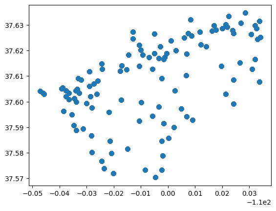
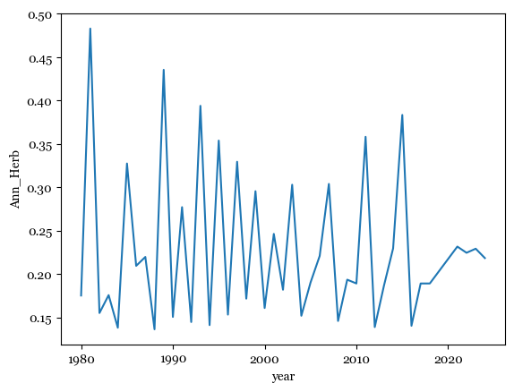
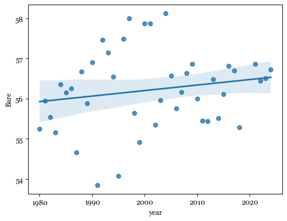

# importing necessary packages
import pandas as pd
import seaborn as sns
import matplotlib.pyplot as plt
import matplotlib
import geopandas as gpd
import folium
import requests
import numpy as np
import ssl
_create_unverified_https_context = ssl._create_unverified_context
ssl._create_default_https_context = _create_unverified_https_contextExploratory Data Analysis
Importing Packages
Reading in Data
# reading in the historic dataframe
historic_df = pd.read_csv('../data/NABR_historic.csv')
historic_df.head()| long | lat | year | TimePeriod | RCP | scenario | treecanopy | Ann_Herb | Bare | Herb | ... | PPT_Annual | T_Winter | T_Summer | T_Annual | Tmax_Summer | Tmin_Winter | VWC_Winter_whole | VWC_Spring_whole | VWC_Summer_whole | VWC_Fall_whole | |
|---|---|---|---|---|---|---|---|---|---|---|---|---|---|---|---|---|---|---|---|---|---|
| 0 | -110.0472 | 37.60413 | 1980 | Hist | historical | sc1 | 0 | 0 | 84 | 5 | ... | 13.79 | 0.964835 | 23.15924 | 23.159240 | 37.05 | NaN | NaN | NaN | NaN | NaN |
| 1 | -110.0472 | 37.60413 | 1980 | Hist | historical | sc1 | 0 | 0 | 84 | 5 | ... | 2.69 | 0.964835 | 23.15924 | 0.964835 | 37.05 | NaN | NaN | NaN | NaN | NaN |
| 2 | -110.0472 | 37.60413 | 1980 | Hist | historical | sc1 | 0 | 0 | 84 | 5 | ... | 13.79 | 0.964835 | 23.15924 | 0.964835 | 37.05 | NaN | NaN | NaN | NaN | NaN |
| 3 | -110.0472 | 37.60413 | 1980 | Hist | historical | sc1 | 0 | 0 | 84 | 5 | ... | 2.69 | 0.964835 | 23.15924 | 23.159240 | 37.05 | NaN | NaN | NaN | NaN | NaN |
| 4 | -110.0472 | 37.60413 | 1980 | Hist | historical | sc1 | 0 | 0 | 84 | 5 | ... | NaN | NaN | NaN | NaN | NaN | -12.45 | 0.113447 | 0.096831 | 0.041876 | 0.052298 |
5 rows × 29 columns
# reading in the recent dataframe
recent_df = pd.read_csv('../data/nearterm_data_2020-2024.csv')
recent_df.head()| long | lat | year | TimePeriod | RCP | scenario | treecanopy | Ann_Herb | Bare | Herb | ... | PPT_Annual | T_Winter | T_Summer | T_Annual | Tmax_Summer | Tmin_Winter | VWC_Winter_whole | VWC_Spring_whole | VWC_Summer_whole | VWC_Fall_whole | |
|---|---|---|---|---|---|---|---|---|---|---|---|---|---|---|---|---|---|---|---|---|---|
| 0 | -110.0472 | 37.60413 | 2021 | NT | 4.5 | sc22 | 0 | 0 | 84 | 5 | ... | 6.37 | 1.630333 | 24.50402 | 24.50402 | 36.89 | NaN | NaN | NaN | NaN | NaN |
| 1 | -110.0472 | 37.60413 | 2021 | NT | 4.5 | sc22 | 0 | 0 | 84 | 5 | ... | NaN | NaN | NaN | NaN | NaN | -12.77 | 0.114652 | 0.078764 | 0.043514 | 0.051281 |
| 2 | -110.0472 | 37.60413 | 2021 | NT | 4.5 | sc23 | 0 | 0 | 84 | 5 | ... | 3.09 | 1.389056 | 24.11043 | 24.11043 | 37.95 | NaN | NaN | NaN | NaN | NaN |
| 3 | -110.0472 | 37.60413 | 2021 | NT | 4.5 | sc23 | 0 | 0 | 84 | 5 | ... | NaN | NaN | NaN | NaN | NaN | -18.96 | 0.130221 | 0.096412 | 0.041232 | 0.092241 |
| 4 | -110.0472 | 37.60413 | 2021 | NT | 4.5 | sc24 | 0 | 0 | 84 | 5 | ... | 6.87 | -0.334389 | 25.54266 | 10.31321 | 37.74 | NaN | NaN | NaN | NaN | NaN |
5 rows × 29 columns
Initial EDA
Data Shape
historic_df.shape(13821, 29)recent_df.shape(55802, 29)Summary Statistics for Numerical Columns
historic_df.describe()| long | lat | year | treecanopy | Ann_Herb | Bare | Herb | Litter | Shrub | DrySoilDays_Summer_whole | ... | PPT_Annual | T_Winter | T_Summer | T_Annual | Tmax_Summer | Tmin_Winter | VWC_Winter_whole | VWC_Spring_whole | VWC_Summer_whole | VWC_Fall_whole | |
|---|---|---|---|---|---|---|---|---|---|---|---|---|---|---|---|---|---|---|---|---|---|
| count | 13821.000000 | 13821.000000 | 13821.000000 | 13821.000000 | 13821.000000 | 13821.000000 | 13821.000000 | 13821.000000 | 13821.000000 | 4476.000000 | ... | 7930.000000 | 9453.000000 | 9453.000000 | 7930.000000 | 9453.000000 | 4476.000000 | 4476.000000 | 4476.000000 | 4476.000000 | 4476.000000 |
| mean | -110.005518 | 37.608507 | 1998.889299 | 10.062586 | 0.228131 | 56.148976 | 9.553144 | 11.769626 | 15.482454 | 7.447274 | ... | 7.335531 | -0.141305 | 22.409513 | 10.722353 | 35.880022 | -15.534115 | 0.119312 | 0.109115 | 0.068170 | 0.093811 |
| std | 0.022635 | 0.016206 | 11.283303 | 8.855615 | 1.069702 | 18.418774 | 3.887177 | 6.112302 | 8.594975 | 20.763970 | ... | 3.619670 | 1.400045 | 1.024607 | 8.150340 | 1.346755 | 3.135112 | 0.037770 | 0.039504 | 0.018894 | 0.028577 |
| min | -110.047200 | 37.570340 | 1980.000000 | 0.000000 | 0.000000 | 11.000000 | 1.000000 | 1.000000 | 0.000000 | 0.000000 | ... | 1.760000 | -3.434615 | 19.554890 | -3.434615 | 32.150000 | -26.250000 | 0.032807 | 0.034724 | 0.030281 | 0.031248 |
| 25% | -110.027300 | 37.598060 | 1989.000000 | 0.000000 | 0.000000 | 43.000000 | 8.000000 | 7.000000 | 10.000000 | 0.000000 | ... | 4.870000 | -1.228889 | 21.714130 | 2.312500 | 34.950000 | -17.250000 | 0.091431 | 0.079048 | 0.052521 | 0.073958 |
| 50% | -110.005000 | 37.609150 | 1999.000000 | 9.000000 | 0.000000 | 54.000000 | 10.000000 | 10.000000 | 15.000000 | 0.000000 | ... | 6.720000 | -0.208333 | 22.327170 | 10.509780 | 35.850000 | -14.950000 | 0.119300 | 0.101166 | 0.066038 | 0.092939 |
| 75% | -109.987800 | 37.622350 | 2009.000000 | 18.000000 | 0.000000 | 67.000000 | 11.000000 | 16.000000 | 20.000000 | 0.000000 | ... | 9.690000 | 0.906593 | 23.132610 | 13.428020 | 37.050000 | -13.850000 | 0.144474 | 0.138545 | 0.083102 | 0.111148 |
| max | -109.965900 | 37.634760 | 2018.000000 | 29.000000 | 6.000000 | 94.000000 | 20.000000 | 26.000000 | 46.000000 | 89.000000 | ... | 20.630000 | 3.393333 | 24.550000 | 24.550000 | 38.550000 | -9.350000 | 0.232833 | 0.214546 | 0.119182 | 0.205399 |
8 rows × 26 columns
Historical data ranges from 1980-2018.
recent_df.describe()| long | lat | year | RCP | treecanopy | Ann_Herb | Bare | Herb | Litter | Shrub | ... | PPT_Annual | T_Winter | T_Summer | T_Annual | Tmax_Summer | Tmin_Winter | VWC_Winter_whole | VWC_Spring_whole | VWC_Summer_whole | VWC_Fall_whole | |
|---|---|---|---|---|---|---|---|---|---|---|---|---|---|---|---|---|---|---|---|---|---|
| count | 55802.000000 | 55802.000000 | 55802.000000 | 55802.000000 | 55802.000000 | 55802.000000 | 55802.000000 | 55802.000000 | 55802.000000 | 55802.000000 | ... | 32000.000000 | 37882.000000 | 37882.000000 | 32000.000000 | 37882.000000 | 18273.000000 | 18273.000000 | 18273.000000 | 18273.000000 | 18273.000000 |
| mean | -110.006322 | 37.608169 | 2022.499211 | 6.501290 | 9.672682 | 0.226067 | 56.630497 | 9.506523 | 11.736192 | 15.348428 | ... | 7.876302 | 1.061328 | 23.896685 | 11.987947 | 37.409251 | -13.854524 | 0.130339 | 0.113198 | 0.069430 | 0.095702 |
| std | 0.022496 | 0.016194 | 1.117402 | 2.000018 | 8.785014 | 1.063672 | 18.480834 | 3.891147 | 6.101769 | 8.562249 | ... | 4.170495 | 1.649202 | 1.160074 | 8.181101 | 1.886281 | 4.273170 | 0.039756 | 0.041728 | 0.019916 | 0.031099 |
| min | -110.047200 | 37.570340 | 2021.000000 | 4.500000 | 0.000000 | 0.000000 | 11.000000 | 1.000000 | 1.000000 | 0.000000 | ... | 0.430000 | -5.392722 | 19.264730 | -5.392722 | 31.370000 | -30.270000 | 0.036778 | 0.032329 | 0.029968 | 0.031148 |
| 25% | -110.027300 | 37.598060 | 2022.000000 | 4.500000 | 0.000000 | 0.000000 | 45.000000 | 8.000000 | 8.000000 | 10.000000 | ... | 4.790000 | 0.110056 | 23.150540 | 4.064556 | 36.280000 | -16.470000 | 0.102253 | 0.079512 | 0.052745 | 0.073698 |
| 50% | -110.005700 | 37.608620 | 2022.000000 | 8.500000 | 9.000000 | 0.000000 | 56.000000 | 10.000000 | 10.000000 | 14.000000 | ... | 7.300000 | 1.143556 | 23.927660 | 11.702030 | 37.400000 | -12.900000 | 0.129224 | 0.105576 | 0.068260 | 0.092410 |
| 75% | -109.990900 | 37.621560 | 2023.000000 | 8.500000 | 18.000000 | 0.000000 | 67.000000 | 11.000000 | 16.000000 | 20.000000 | ... | 10.360000 | 2.135722 | 24.576680 | 14.686260 | 38.290000 | -10.950000 | 0.155793 | 0.144423 | 0.084791 | 0.112807 |
| max | -109.965900 | 37.634760 | 2024.000000 | 8.500000 | 29.000000 | 6.000000 | 94.000000 | 20.000000 | 26.000000 | 46.000000 | ... | 33.730000 | 5.474725 | 27.745330 | 27.745330 | 47.170000 | -6.510000 | 0.241642 | 0.219919 | 0.145245 | 0.230940 |
8 rows × 27 columns
Recent data ranges from 2021-2024.
Column Datatypes
historic_df.dtypeslong float64
lat float64
year int64
TimePeriod object
RCP object
scenario object
treecanopy int64
Ann_Herb int64
Bare int64
Herb int64
Litter int64
Shrub int64
DrySoilDays_Summer_whole float64
Evap_Summer float64
ExtremeShortTermDryStress_Summer_whole float64
FrostDays_Winter float64
NonDrySWA_Summer_whole float64
PPT_Winter float64
PPT_Summer float64
PPT_Annual float64
T_Winter float64
T_Summer float64
T_Annual float64
Tmax_Summer float64
Tmin_Winter float64
VWC_Winter_whole float64
VWC_Spring_whole float64
VWC_Summer_whole float64
VWC_Fall_whole float64
dtype: objectrecent_df.dtypeslong float64
lat float64
year int64
TimePeriod object
RCP float64
scenario object
treecanopy int64
Ann_Herb int64
Bare int64
Herb int64
Litter int64
Shrub int64
DrySoilDays_Summer_whole float64
Evap_Summer float64
ExtremeShortTermDryStress_Summer_whole float64
FrostDays_Winter float64
NonDrySWA_Summer_whole float64
PPT_Winter float64
PPT_Summer float64
PPT_Annual float64
T_Winter float64
T_Summer float64
T_Annual float64
Tmax_Summer float64
Tmin_Winter float64
VWC_Winter_whole float64
VWC_Spring_whole float64
VWC_Summer_whole float64
VWC_Fall_whole float64
dtype: objectIdentify NANs
historic_df.isna().sum()long 0
lat 0
year 0
TimePeriod 0
RCP 0
scenario 0
treecanopy 0
Ann_Herb 0
Bare 0
Herb 0
Litter 0
Shrub 0
DrySoilDays_Summer_whole 9345
Evap_Summer 9345
ExtremeShortTermDryStress_Summer_whole 9345
FrostDays_Winter 9345
NonDrySWA_Summer_whole 9368
PPT_Winter 4368
PPT_Summer 4368
PPT_Annual 5891
T_Winter 4368
T_Summer 4368
T_Annual 5891
Tmax_Summer 4368
Tmin_Winter 9345
VWC_Winter_whole 9345
VWC_Spring_whole 9345
VWC_Summer_whole 9345
VWC_Fall_whole 9345
dtype: int64recent_df.isna().sum()long 0
lat 0
year 0
TimePeriod 0
RCP 0
scenario 0
treecanopy 0
Ann_Herb 0
Bare 0
Herb 0
Litter 0
Shrub 0
DrySoilDays_Summer_whole 37529
Evap_Summer 37529
ExtremeShortTermDryStress_Summer_whole 37535
FrostDays_Winter 37529
NonDrySWA_Summer_whole 37630
PPT_Winter 17920
PPT_Summer 17920
PPT_Annual 23802
T_Winter 17920
T_Summer 17920
T_Annual 23802
Tmax_Summer 17920
Tmin_Winter 37529
VWC_Winter_whole 37529
VWC_Spring_whole 37529
VWC_Summer_whole 37529
VWC_Fall_whole 37529
dtype: int64Viewing Correlations
sns.heatmap(historic_df.select_dtypes(include='number').corr())
plt.show()sns.heatmap(recent_df.select_dtypes(include='number').corr())
plt.show()Year
sns.histplot(data=historic_df, x="year")
plt.show()
Latitude and Longitude
plt.scatter(x=historic_df['long'], y=historic_df['lat'])
plt.show()
historic_df = pd.read_csv('../data/NABR_historic.csv')
df_1980 = historic_df[historic_df['year'] == 1980]
cmap = plt.colormaps['Greens']
norm = matplotlib.colors.Normalize(vmin=historic_df['Litter'].min(), vmax=historic_df['Litter'].max())
df_1980['color'] = df_1980['Litter'].apply(lambda x: cmap(norm(x)))
def rgba_to_hex(rgba):
return '#' + ''.join([f'{int(255 * c):02x}' for c in rgba[:3]])
df_1980['color'] = df_1980['color'].apply(rgba_to_hex)
state_geo = requests.get(
"https://raw.githubusercontent.com/python-visualization/folium-example-data/main/us_states.json"
).json()
state_data = pd.read_csv(
"https://raw.githubusercontent.com/python-visualization/folium-example-data/main/us_unemployment_oct_2012.csv"
)
m = folium.Map(location=[37.608507, -110.005518], zoom_start=12.5)
for i in range(df_1980.shape[0]):
if not np.isnan(df_1980.iloc[i].Litter):
folium.CircleMarker(location=[df_1980.iloc[i].lat,df_1980.iloc[i].long], radius= 8,
color=df_1980.iloc[i].color, fill_color = df_1980.iloc[i].color,
fill = True, fill_opacity=0.7, tooltip=df_1980.iloc[i].Litter).add_to(m)
m/var/folders/_8/crn2q8y154j26jm9jc_zpzgw0000gn/T/ipykernel_43912/3003857659.py:7: SettingWithCopyWarning:
A value is trying to be set on a copy of a slice from a DataFrame.
Try using .loc[row_indexer,col_indexer] = value instead
See the caveats in the documentation: https://pandas.pydata.org/pandas-docs/stable/user_guide/indexing.html#returning-a-view-versus-a-copy
df_1980['color'] = df_1980['Litter'].apply(lambda x: cmap(norm(x)))
/var/folders/_8/crn2q8y154j26jm9jc_zpzgw0000gn/T/ipykernel_43912/3003857659.py:12: SettingWithCopyWarning:
A value is trying to be set on a copy of a slice from a DataFrame.
Try using .loc[row_indexer,col_indexer] = value instead
See the caveats in the documentation: https://pandas.pydata.org/pandas-docs/stable/user_guide/indexing.html#returning-a-view-versus-a-copy
df_1980['color'] = df_1980['color'].apply(rgba_to_hex)Make this Notebook Trusted to load map: File -> Trust Notebook
Frost Days Over Time
plt.scatter(x=historic_df['year'], y=historic_df['FrostDays_Winter'])
plt.show()sns.lineplot(x=historic_df['year'], y=historic_df['T_Winter'])
plt.show()plt.scatter(x=historic_df['year'], y=historic_df['Evap_Summer'])
plt.show()Grouping by Year
grouped_historic_df = historic_df.groupby(by='year').mean().reset_index()
grouped_historic_df.head()/var/folders/_8/crn2q8y154j26jm9jc_zpzgw0000gn/T/ipykernel_43912/3020530883.py:1: FutureWarning: The default value of numeric_only in DataFrameGroupBy.mean is deprecated. In a future version, numeric_only will default to False. Either specify numeric_only or select only columns which should be valid for the function.
grouped_historic_df = historic_df.groupby(by='year').mean().reset_index()| year | long | lat | treecanopy | Ann_Herb | Bare | Herb | Litter | Shrub | DrySoilDays_Summer_whole | ... | PPT_Annual | T_Winter | T_Summer | T_Annual | Tmax_Summer | Tmin_Winter | VWC_Winter_whole | VWC_Spring_whole | VWC_Summer_whole | VWC_Fall_whole | |
|---|---|---|---|---|---|---|---|---|---|---|---|---|---|---|---|---|---|---|---|---|---|
| 0 | 1980 | -110.005351 | 37.607539 | 10.704188 | 0.175393 | 55.238220 | 9.850785 | 12.039267 | 15.832461 | 9.017699 | ... | 8.281304 | 0.777389 | 22.819936 | 10.792100 | 36.704444 | -12.539381 | 0.138659 | 0.139731 | 0.067372 | 0.078143 |
| 1 | 1981 | -110.007136 | 37.608959 | 8.835227 | 0.482955 | 55.946023 | 9.443182 | 12.028409 | 15.801136 | 5.950413 | ... | 8.430754 | 3.221588 | 22.843714 | 11.240037 | 37.174583 | -9.680579 | 0.082860 | 0.091203 | 0.066236 | 0.114685 |
| 2 | 1982 | -110.003922 | 37.609079 | 11.077612 | 0.155224 | 55.531343 | 9.728358 | 11.928358 | 15.910448 | 6.690265 | ... | 7.831492 | -0.203652 | 21.612221 | 10.879676 | 36.264798 | -16.973894 | 0.130767 | 0.109395 | 0.070423 | 0.098744 |
| 3 | 1983 | -110.006443 | 37.608673 | 10.070866 | 0.175853 | 55.160105 | 9.629921 | 11.774278 | 15.367454 | 4.238938 | ... | 10.440302 | 0.243176 | 20.781342 | 9.620905 | 34.058922 | -15.273894 | 0.143099 | 0.144084 | 0.070878 | 0.094463 |
| 4 | 1984 | -110.005571 | 37.607210 | 10.382979 | 0.138298 | 56.356383 | 9.654255 | 11.789894 | 15.577128 | 5.451327 | ... | 7.051814 | -1.262377 | 21.450322 | 8.895733 | 34.810985 | -18.656195 | 0.131594 | 0.111327 | 0.068098 | 0.093364 |
5 rows × 26 columns
grouped_recent_df = recent_df.groupby(by='year').mean().reset_index()
grouped_recent_df.head()/var/folders/_8/crn2q8y154j26jm9jc_zpzgw0000gn/T/ipykernel_43912/313397739.py:1: FutureWarning: The default value of numeric_only in DataFrameGroupBy.mean is deprecated. In a future version, numeric_only will default to False. Either specify numeric_only or select only columns which should be valid for the function.
grouped_recent_df = recent_df.groupby(by='year').mean().reset_index()| year | long | lat | RCP | treecanopy | Ann_Herb | Bare | Herb | Litter | Shrub | ... | PPT_Annual | T_Winter | T_Summer | T_Annual | Tmax_Summer | Tmin_Winter | VWC_Winter_whole | VWC_Spring_whole | VWC_Summer_whole | VWC_Fall_whole | |
|---|---|---|---|---|---|---|---|---|---|---|---|---|---|---|---|---|---|---|---|---|---|
| 0 | 2021 | -110.006754 | 37.607937 | 6.519654 | 9.754107 | 0.231762 | 56.863281 | 9.497597 | 11.611290 | 15.242235 | ... | 8.043604 | 0.535845 | 23.459005 | 11.669819 | 36.853607 | -15.342008 | 0.136478 | 0.117917 | 0.068904 | 0.095052 |
| 1 | 2022 | -110.006034 | 37.608341 | 6.467818 | 9.625402 | 0.224630 | 56.435028 | 9.522277 | 11.832654 | 15.460702 | ... | 7.189039 | 1.099121 | 24.007790 | 12.108498 | 37.731397 | -13.389423 | 0.125575 | 0.109543 | 0.068425 | 0.090263 |
| 2 | 2023 | -110.006250 | 37.608067 | 6.535535 | 9.575154 | 0.229331 | 56.499642 | 9.529589 | 11.766585 | 15.356498 | ... | 8.536049 | 1.137974 | 23.861794 | 11.967798 | 37.239484 | -13.486490 | 0.125822 | 0.110620 | 0.070790 | 0.100326 |
| 3 | 2024 | -110.006253 | 37.608330 | 6.482184 | 9.736422 | 0.218534 | 56.724928 | 9.476509 | 11.733908 | 15.333908 | ... | 7.736914 | 1.472978 | 24.258524 | 12.206578 | 37.812284 | -13.198068 | 0.133504 | 0.114727 | 0.069604 | 0.097175 |
4 rows × 27 columns
total_grouped_df = pd.concat([grouped_historic_df, grouped_recent_df])total_grouped_df| year | long | lat | treecanopy | Ann_Herb | Bare | Herb | Litter | Shrub | DrySoilDays_Summer_whole | ... | T_Winter | T_Summer | T_Annual | Tmax_Summer | Tmin_Winter | VWC_Winter_whole | VWC_Spring_whole | VWC_Summer_whole | VWC_Fall_whole | RCP | |
|---|---|---|---|---|---|---|---|---|---|---|---|---|---|---|---|---|---|---|---|---|---|
| 0 | 1980 | -110.005351 | 37.607539 | 10.704188 | 0.175393 | 55.238220 | 9.850785 | 12.039267 | 15.832461 | 9.017699 | ... | 0.777389 | 22.819936 | 10.792100 | 36.704444 | -12.539381 | 0.138659 | 0.139731 | 0.067372 | 0.078143 | NaN |
| 1 | 1981 | -110.007136 | 37.608959 | 8.835227 | 0.482955 | 55.946023 | 9.443182 | 12.028409 | 15.801136 | 5.950413 | ... | 3.221588 | 22.843714 | 11.240037 | 37.174583 | -9.680579 | 0.082860 | 0.091203 | 0.066236 | 0.114685 | NaN |
| 2 | 1982 | -110.003922 | 37.609079 | 11.077612 | 0.155224 | 55.531343 | 9.728358 | 11.928358 | 15.910448 | 6.690265 | ... | -0.203652 | 21.612221 | 10.879676 | 36.264798 | -16.973894 | 0.130767 | 0.109395 | 0.070423 | 0.098744 | NaN |
| 3 | 1983 | -110.006443 | 37.608673 | 10.070866 | 0.175853 | 55.160105 | 9.629921 | 11.774278 | 15.367454 | 4.238938 | ... | 0.243176 | 20.781342 | 9.620905 | 34.058922 | -15.273894 | 0.143099 | 0.144084 | 0.070878 | 0.094463 | NaN |
| 4 | 1984 | -110.005571 | 37.607210 | 10.382979 | 0.138298 | 56.356383 | 9.654255 | 11.789894 | 15.577128 | 5.451327 | ... | -1.262377 | 21.450322 | 8.895733 | 34.810985 | -18.656195 | 0.131594 | 0.111327 | 0.068098 | 0.093364 | NaN |
| 5 | 1985 | -110.005950 | 37.608551 | 9.058480 | 0.327485 | 56.149123 | 9.467836 | 11.812865 | 15.409357 | 6.715517 | ... | -1.190768 | 22.960838 | 9.736100 | 37.118696 | -18.750862 | 0.131757 | 0.136820 | 0.068432 | 0.131878 | NaN |
| 6 | 1986 | -110.004749 | 37.609148 | 10.095808 | 0.209581 | 56.251497 | 9.676647 | 11.784431 | 15.571856 | 6.327434 | ... | 2.080776 | 21.938382 | 11.650818 | 34.554054 | -12.105752 | 0.152562 | 0.116884 | 0.069044 | 0.127797 | NaN |
| 7 | 1987 | -110.004819 | 37.610127 | 9.597855 | 0.219839 | 54.656836 | 9.788204 | 12.056300 | 15.605898 | 5.123894 | ... | -0.646356 | 21.471746 | 10.081023 | 33.710153 | -14.347345 | 0.158368 | 0.129635 | 0.073397 | 0.104406 | NaN |
| 8 | 1988 | -110.004435 | 37.608229 | 10.503937 | 0.136483 | 56.666667 | 9.556430 | 11.595801 | 15.217848 | 6.654867 | ... | -1.409471 | 22.738840 | 9.449284 | 35.196097 | -16.122566 | 0.142341 | 0.123152 | 0.067566 | 0.076221 | NaN |
| 9 | 1989 | -110.008762 | 37.607779 | 9.150150 | 0.435435 | 55.882883 | 9.381381 | 12.042042 | 16.081081 | 6.925620 | ... | -2.027321 | 22.129639 | 10.532511 | 37.792534 | -19.955785 | 0.076107 | 0.086949 | 0.067286 | 0.065086 | NaN |
| 10 | 1990 | -110.005119 | 37.608432 | 10.127536 | 0.150725 | 56.895652 | 9.571014 | 11.707246 | 15.301449 | 12.522124 | ... | -0.292568 | 22.760380 | 11.742209 | 36.758584 | -14.541150 | 0.067224 | 0.073535 | 0.065655 | 0.101957 | NaN |
| 11 | 1991 | -110.005122 | 37.609737 | 9.427461 | 0.277202 | 53.844560 | 10.041451 | 12.349741 | 16.036269 | 7.575221 | ... | -2.306478 | 21.789247 | 9.516426 | 34.132117 | -24.809292 | 0.113461 | 0.116784 | 0.066854 | 0.094960 | NaN |
| 12 | 1992 | -110.005131 | 37.607629 | 10.451253 | 0.144847 | 57.459610 | 9.484680 | 11.353760 | 15.100279 | 6.663717 | ... | -1.464457 | 21.246520 | 9.794092 | 33.888057 | -14.396018 | 0.132550 | 0.127353 | 0.068325 | 0.085092 | NaN |
| 13 | 1993 | -110.008555 | 37.607476 | 9.224242 | 0.393939 | 57.136364 | 9.212121 | 11.596970 | 15.600000 | 7.636364 | ... | -1.476262 | 20.913007 | 10.064734 | 34.351835 | -14.182231 | 0.127201 | 0.133303 | 0.068032 | 0.095012 | NaN |
| 14 | 1994 | -110.004093 | 37.608190 | 10.657609 | 0.141304 | 56.548913 | 9.625000 | 11.801630 | 15.402174 | 9.920354 | ... | -0.674323 | 24.029990 | 11.462804 | 36.795313 | -14.543805 | 0.100086 | 0.087110 | 0.065005 | 0.084297 | NaN |
| 15 | 1995 | -110.005144 | 37.609641 | 9.726542 | 0.353887 | 54.067024 | 9.959786 | 12.243968 | 15.863271 | 6.628319 | ... | 1.499759 | 21.571243 | 10.777970 | 36.803257 | -10.787168 | 0.134743 | 0.129202 | 0.068506 | 0.066999 | NaN |
| 16 | 1996 | -110.005450 | 37.607890 | 10.203540 | 0.153392 | 57.483776 | 9.424779 | 11.333333 | 15.005900 | 14.327434 | ... | 1.358649 | 23.741973 | 11.581406 | 35.635903 | -12.626991 | 0.072488 | 0.068873 | 0.065235 | 0.108784 | NaN |
| 17 | 1997 | -110.009756 | 37.607974 | 9.243553 | 0.329513 | 57.988539 | 9.134670 | 11.355301 | 15.183381 | 4.892562 | ... | 0.574630 | 21.696819 | 11.062671 | 35.024684 | -13.941736 | 0.159997 | 0.125567 | 0.072833 | 0.097813 | NaN |
| 18 | 1998 | -110.004868 | 37.608037 | 10.810256 | 0.171795 | 55.641026 | 9.782051 | 11.984615 | 15.956410 | 7.026549 | ... | -0.202842 | 21.982959 | 11.003992 | 36.694245 | -11.914602 | 0.125372 | 0.103612 | 0.067762 | 0.103489 | NaN |
| 19 | 1999 | -110.003950 | 37.610107 | 9.806630 | 0.295580 | 54.917127 | 9.585635 | 11.906077 | 15.627072 | 3.946903 | ... | 1.619769 | 21.114511 | 10.975357 | 33.755200 | -15.321681 | 0.141488 | 0.107789 | 0.075292 | 0.069905 | NaN |
| 20 | 2000 | -110.004759 | 37.607546 | 10.176471 | 0.160991 | 57.863777 | 9.281734 | 11.232198 | 14.820433 | 10.000000 | ... | 1.161586 | 23.443849 | 11.015026 | 36.379384 | -12.777434 | 0.089960 | 0.099751 | 0.065305 | 0.097275 | NaN |
| 21 | 2001 | -110.010228 | 37.607244 | 9.797101 | 0.246377 | 57.869565 | 9.026087 | 11.202899 | 14.817391 | 5.305785 | ... | 0.146028 | 22.745428 | 11.512892 | 35.637124 | -13.236777 | 0.131348 | 0.120574 | 0.068167 | 0.066253 | NaN |
| 22 | 2002 | -110.002430 | 37.608691 | 10.657609 | 0.182065 | 55.350543 | 9.709239 | 12.320652 | 15.894022 | 14.008850 | ... | -1.147261 | 23.639760 | 11.119575 | 36.682031 | -14.488938 | 0.078969 | 0.069995 | 0.064531 | 0.105430 | NaN |
| 23 | 2003 | -110.005645 | 37.609624 | 9.481818 | 0.303030 | 55.957576 | 9.548485 | 11.666667 | 15.539394 | 7.716814 | ... | 1.104850 | 23.715361 | 11.380781 | 37.533945 | -12.447345 | 0.108308 | 0.113285 | 0.066489 | 0.105865 | NaN |
| 24 | 2004 | -110.005425 | 37.607394 | 10.327485 | 0.152047 | 58.122807 | 9.315789 | 11.122807 | 14.625731 | 10.150442 | ... | -1.062542 | 22.231952 | 10.303855 | 34.739130 | -15.356195 | 0.126405 | 0.112445 | 0.065543 | 0.124736 | NaN |
| 25 | 2005 | -110.007463 | 37.608834 | 9.440341 | 0.190341 | 56.573864 | 9.235795 | 11.724432 | 15.025568 | 5.198347 | ... | 1.156187 | 21.810873 | 10.503855 | 37.834583 | -14.514463 | 0.174874 | 0.130235 | 0.069579 | 0.084766 | NaN |
| 26 | 2006 | -110.003675 | 37.608553 | 10.698113 | 0.221024 | 55.749326 | 9.606469 | 12.118598 | 15.703504 | 7.557522 | ... | 0.441529 | 23.352837 | 11.313436 | 36.478958 | -15.207522 | 0.084161 | 0.099577 | 0.066577 | 0.132947 | NaN |
| 27 | 2007 | -110.004787 | 37.610352 | 9.279635 | 0.303951 | 56.158055 | 9.510638 | 11.775076 | 15.741641 | 7.163793 | ... | -0.527404 | 23.397156 | 11.733129 | 35.745392 | -16.600000 | 0.134026 | 0.102785 | 0.067254 | 0.082709 | NaN |
| 28 | 2008 | -110.004816 | 37.608364 | 10.148876 | 0.146067 | 56.637640 | 9.466292 | 11.367978 | 15.056180 | 6.123894 | ... | -2.521791 | 21.791155 | 8.711104 | 34.747131 | -18.905752 | 0.139671 | 0.126405 | 0.068493 | 0.069977 | NaN |
| 29 | 2009 | -110.006890 | 37.608112 | 10.312139 | 0.193642 | 56.855491 | 9.352601 | 11.387283 | 14.945087 | 8.689655 | ... | -0.047733 | 21.953432 | 10.142834 | 35.811538 | -17.551724 | 0.117967 | 0.096112 | 0.065291 | 0.069608 | NaN |
| 30 | 2010 | -110.004363 | 37.607951 | 10.251412 | 0.189266 | 55.997175 | 9.672316 | 12.084746 | 15.502825 | 4.867257 | ... | -2.592505 | 22.092790 | 10.560948 | 37.280579 | -17.489823 | 0.079354 | 0.123507 | 0.074979 | 0.080803 | NaN |
| 31 | 2011 | -110.005152 | 37.609884 | 9.457944 | 0.358255 | 55.442368 | 9.476636 | 12.040498 | 15.975078 | 7.818966 | ... | -1.030936 | 22.437866 | 10.600896 | 35.317464 | -23.090517 | 0.108030 | 0.098625 | 0.065888 | 0.080661 | NaN |
| 32 | 2012 | -110.003210 | 37.609723 | 10.494652 | 0.139037 | 55.435829 | 9.852941 | 11.826203 | 15.628342 | 8.159292 | ... | -0.167576 | 23.449077 | 11.236849 | 35.283969 | -15.001327 | 0.108296 | 0.091079 | 0.068027 | 0.073341 | NaN |
| 33 | 2013 | -110.007099 | 37.607856 | 10.623955 | 0.186630 | 56.473538 | 9.364903 | 11.442897 | 15.136490 | 8.793103 | ... | -1.396860 | 22.479153 | 10.444270 | 38.096559 | -19.712931 | 0.109383 | 0.097868 | 0.068731 | 0.143574 | NaN |
| 34 | 2014 | -110.004451 | 37.607959 | 10.596639 | 0.229692 | 55.515406 | 9.703081 | 12.364146 | 15.893557 | 6.353982 | ... | 0.417372 | 21.557438 | 11.725331 | 35.427959 | -17.975664 | 0.156950 | 0.112923 | 0.068344 | 0.090380 | NaN |
| 35 | 2015 | -110.005660 | 37.609478 | 9.248466 | 0.383436 | 56.104294 | 9.490798 | 11.754601 | 15.757669 | 3.284483 | ... | 1.601075 | 21.736249 | 11.426439 | 35.809813 | -15.332759 | 0.108205 | 0.105949 | 0.072531 | 0.107919 | NaN |
| 36 | 2016 | -110.005190 | 37.608234 | 10.632432 | 0.140541 | 56.813514 | 9.562162 | 11.283784 | 15.186486 | 6.203540 | ... | -1.285190 | 23.180949 | 10.316781 | 37.441860 | -16.940265 | 0.136673 | 0.116646 | 0.068516 | 0.070656 | NaN |
| 37 | 2017 | -110.006577 | 37.607942 | 10.771186 | 0.189266 | 56.700565 | 9.288136 | 11.285311 | 15.064972 | 6.448276 | ... | 0.850686 | 23.668529 | 11.466445 | 37.042562 | -15.049138 | 0.124318 | 0.105755 | 0.066612 | 0.067664 | NaN |
| 38 | 2018 | -110.004049 | 37.607693 | 10.367232 | 0.189266 | 55.288136 | 9.847458 | 12.305085 | 15.920904 | 13.070796 | ... | 1.875200 | 23.987322 | 12.899735 | 35.265289 | -12.765044 | 0.071004 | 0.067861 | 0.065397 | 0.113033 | NaN |
| 0 | 2021 | -110.006754 | 37.607937 | 9.754107 | 0.231762 | 56.863281 | 9.497597 | 11.611290 | 15.242235 | 7.235835 | ... | 0.535845 | 23.459005 | 11.669819 | 36.853607 | -15.342008 | 0.136478 | 0.117917 | 0.068904 | 0.095052 | 6.519654 |
| 1 | 2022 | -110.006034 | 37.608341 | 9.625402 | 0.224630 | 56.435028 | 9.522277 | 11.832654 | 15.460702 | 7.535621 | ... | 1.099121 | 24.007790 | 12.108498 | 37.731397 | -13.389423 | 0.125575 | 0.109543 | 0.068425 | 0.090263 | 6.467818 |
| 2 | 2023 | -110.006250 | 37.608067 | 9.575154 | 0.229331 | 56.499642 | 9.529589 | 11.766585 | 15.356498 | 6.895542 | ... | 1.137974 | 23.861794 | 11.967798 | 37.239484 | -13.486490 | 0.125822 | 0.110620 | 0.070790 | 0.100326 | 6.535535 |
| 3 | 2024 | -110.006253 | 37.608330 | 9.736422 | 0.218534 | 56.724928 | 9.476509 | 11.733908 | 15.333908 | 7.730549 | ... | 1.472978 | 24.258524 | 12.206578 | 37.812284 | -13.198068 | 0.133504 | 0.114727 | 0.069604 | 0.097175 | 6.482184 |
43 rows × 27 columns
Annual Average Temperature by Year
plt.figure(figsize=(9, 6))
sns.lineplot(x=total_grouped_df['year'], y=total_grouped_df['T_Annual'], color = '#55828B')
plt.rcParams["font.family"] = "Georgia"
plt.rcParams['axes.facecolor'] = "#C9E4CA"
plt.rcParams['figure.facecolor'] = "#C9E4CA"
plt.xlabel('Year')
plt.ylabel('Average Temperature in Degrees (Celsius)')
plt.title('Annual Average Temperature in Southeastern Utah Group National Parks from 1980-2024')
plt.savefig('../scholarship/images/average_temp.png')
plt.show()Average Frost Days by Year
plt.figure(figsize=(9, 6))
sns.lineplot(x=total_grouped_df['year'], y=total_grouped_df['FrostDays_Winter'], color = '#364958')
plt.xlabel('Year')
plt.ylabel('Average Number of Frost Days')
plt.title('Average Number of Frost Days in Southeastern Utah Group National Parks from 1980-2024')
plt.savefig('../scholarship/images/frost_days.png')
plt.show()Bare Land Over the Years
plt.figure(figsize=(9, 6))
sns.lineplot(x=total_grouped_df['year'], y=total_grouped_df['Bare'], color = '#55828B')
plt.xlabel('Year')
plt.ylabel('Average Percentage of Bare Land')
plt.title('Average Bare Land Percentage in Southeastern Utah Group National Parks from 1980-2024')
plt.savefig('../scholarship/images/bare.png')
plt.show()
plt.show()
sns.lineplot(x=total_grouped_df['year'], y=total_grouped_df['Ann_Herb'])
plt.show()
sns.regplot(x=total_grouped_df['DrySoilDays_Summer_whole'], y=total_grouped_df['treecanopy'])
plt.show()sns.regplot(x=total_grouped_df['year'], y=total_grouped_df['Litter'])
plt.show()Litter
There is a strong relationship between decrease in plant litter over time.
sns.regplot(x=total_grouped_df['year'], y=total_grouped_df['Litter'])
plt.show()sns.regplot(x=total_grouped_df['year'], y=total_grouped_df['Bare'])
plt.show()
sns.regplot(x=total_grouped_df['year'], y=total_grouped_df['Evap_Summer'])
plt.show()
sns.lineplot(x=total_grouped_df['year'], y=total_grouped_df['FrostDays_Winter'])
plt.show()We can see that less plant litter is associated with more bare ground. As the plant litter is decreasing over the years, the bare land is also increasing.
total_grouped_df.select_dtypes(include='number').corr()['year']year 1.000000
long 0.020453
lat -0.051504
treecanopy 0.045849
Ann_Herb -0.099224
Bare 0.180109
Herb -0.169715
Litter -0.135062
Shrub -0.193451
DrySoilDays_Summer_whole 0.066159
Evap_Summer -0.221571
ExtremeShortTermDryStress_Summer_whole 0.333175
FrostDays_Winter -0.436930
NonDrySWA_Summer_whole 0.032263
PPT_Winter 0.099097
PPT_Summer -0.082996
PPT_Annual -0.180385
T_Winter 0.124326
T_Summer 0.473631
T_Annual 0.472704
Tmax_Summer 0.340184
Tmin_Winter -0.054109
VWC_Winter_whole -0.050129
VWC_Spring_whole -0.213002
VWC_Summer_whole 0.032903
VWC_Fall_whole -0.083597
RCP -0.182603
Name: year, dtype: float64sns.regplot(x=total_grouped_df['year'], y=total_grouped_df['Shrub'])
plt.show()from folium.plugins import HeatMapdf_1980[['long', 'lat', 'Shrub']]| long | lat | Shrub | |
|---|---|---|---|
| 0 | -110.0472 | 37.60413 | 7 |
| 1 | -110.0472 | 37.60413 | 7 |
| 2 | -110.0472 | 37.60413 | 7 |
| 3 | -110.0472 | 37.60413 | 7 |
| 4 | -110.0472 | 37.60413 | 7 |
| ... | ... | ... | ... |
| 13666 | -109.9659 | 37.62525 | 22 |
| 13667 | -109.9659 | 37.62525 | 22 |
| 13668 | -109.9659 | 37.62525 | 22 |
| 13669 | -109.9659 | 37.62525 | 22 |
| 13782 | -109.9659 | 37.62525 | 22 |
382 rows × 3 columns
cmap = plt.colormaps['Greens']
norm = matplotlib.colors.Normalize(vmin=historic_df['Litter'].min(), vmax=historic_df['Litter'].max())
df_1980['norm'] = norm/var/folders/_8/crn2q8y154j26jm9jc_zpzgw0000gn/T/ipykernel_43912/2470358848.py:5: SettingWithCopyWarning:
A value is trying to be set on a copy of a slice from a DataFrame.
Try using .loc[row_indexer,col_indexer] = value instead
See the caveats in the documentation: https://pandas.pydata.org/pandas-docs/stable/user_guide/indexing.html#returning-a-view-versus-a-copy
df_1980['norm'] = norm| long | lat | year | TimePeriod | RCP | scenario | treecanopy | Ann_Herb | Bare | Herb | ... | T_Summer | T_Annual | Tmax_Summer | Tmin_Winter | VWC_Winter_whole | VWC_Spring_whole | VWC_Summer_whole | VWC_Fall_whole | color | norm | |
|---|---|---|---|---|---|---|---|---|---|---|---|---|---|---|---|---|---|---|---|---|---|
| 0 | -110.0472 | 37.60413 | 1980 | Hist | historical | sc1 | 0 | 0 | 84 | 5 | ... | 23.15924 | 23.159240 | 37.05 | NaN | NaN | NaN | NaN | NaN | #98d493 | <matplotlib.colors.Normalize object at 0x289c2... |
| 1 | -110.0472 | 37.60413 | 1980 | Hist | historical | sc1 | 0 | 0 | 84 | 5 | ... | 23.15924 | 0.964835 | 37.05 | NaN | NaN | NaN | NaN | NaN | #98d493 | <matplotlib.colors.Normalize object at 0x289c2... |
| 2 | -110.0472 | 37.60413 | 1980 | Hist | historical | sc1 | 0 | 0 | 84 | 5 | ... | 23.15924 | 0.964835 | 37.05 | NaN | NaN | NaN | NaN | NaN | #98d493 | <matplotlib.colors.Normalize object at 0x289c2... |
| 3 | -110.0472 | 37.60413 | 1980 | Hist | historical | sc1 | 0 | 0 | 84 | 5 | ... | 23.15924 | 23.159240 | 37.05 | NaN | NaN | NaN | NaN | NaN | #98d493 | <matplotlib.colors.Normalize object at 0x289c2... |
| 4 | -110.0472 | 37.60413 | 1980 | Hist | historical | sc1 | 0 | 0 | 84 | 5 | ... | NaN | NaN | NaN | -12.45 | 0.113447 | 0.096831 | 0.041876 | 0.052298 | #98d493 | <matplotlib.colors.Normalize object at 0x289c2... |
| ... | ... | ... | ... | ... | ... | ... | ... | ... | ... | ... | ... | ... | ... | ... | ... | ... | ... | ... | ... | ... | ... |
| 13666 | -109.9659 | 37.62525 | 1980 | Hist | historical | sc1 | 18 | 0 | 37 | 18 | ... | 22.51630 | 11.430220 | 36.45 | NaN | NaN | NaN | NaN | NaN | #29924a | <matplotlib.colors.Normalize object at 0x289c2... |
| 13667 | -109.9659 | 37.62525 | 1980 | Hist | historical | sc1 | 18 | 0 | 37 | 18 | ... | 22.51630 | 8.106522 | 36.45 | NaN | NaN | NaN | NaN | NaN | #29924a | <matplotlib.colors.Normalize object at 0x289c2... |
| 13668 | -109.9659 | 37.62525 | 1980 | Hist | historical | sc1 | 18 | 0 | 37 | 18 | ... | 22.51630 | 11.430220 | 36.45 | NaN | NaN | NaN | NaN | NaN | #29924a | <matplotlib.colors.Normalize object at 0x289c2... |
| 13669 | -109.9659 | 37.62525 | 1980 | Hist | historical | sc1 | 18 | 0 | 37 | 18 | ... | 22.51630 | 8.106522 | 36.45 | NaN | NaN | NaN | NaN | NaN | #29924a | <matplotlib.colors.Normalize object at 0x289c2... |
| 13782 | -109.9659 | 37.62525 | 1980 | Hist | historical | sc1 | 18 | 0 | 37 | 18 | ... | NaN | NaN | NaN | -12.65 | 0.154128 | 0.193260 | 0.090396 | 0.096123 | #29924a | <matplotlib.colors.Normalize object at 0x289c2... |
382 rows × 31 columns
m = folium.Map(location=[37.608507, -110.005518], zoom_start=12.5)
heat_data = [[row['lat'], row['long'], row['Shrub']] for index, row in df_1980.iterrows()]
HeatMap(heat_data).add_to(m)
mMake this Notebook Trusted to load map: File -> Trust Notebook
grouped_historic_df.head()| year | long | lat | treecanopy | Ann_Herb | Bare | Herb | Litter | Shrub | DrySoilDays_Summer_whole | ... | PPT_Annual | T_Winter | T_Summer | T_Annual | Tmax_Summer | Tmin_Winter | VWC_Winter_whole | VWC_Spring_whole | VWC_Summer_whole | VWC_Fall_whole | |
|---|---|---|---|---|---|---|---|---|---|---|---|---|---|---|---|---|---|---|---|---|---|
| 0 | 1980 | -110.005351 | 37.607539 | 10.704188 | 0.175393 | 55.238220 | 9.850785 | 12.039267 | 15.832461 | 9.017699 | ... | 8.281304 | 0.777389 | 22.819936 | 10.792100 | 36.704444 | -12.539381 | 0.138659 | 0.139731 | 0.067372 | 0.078143 |
| 1 | 1981 | -110.007136 | 37.608959 | 8.835227 | 0.482955 | 55.946023 | 9.443182 | 12.028409 | 15.801136 | 5.950413 | ... | 8.430754 | 3.221588 | 22.843714 | 11.240037 | 37.174583 | -9.680579 | 0.082860 | 0.091203 | 0.066236 | 0.114685 |
| 2 | 1982 | -110.003922 | 37.609079 | 11.077612 | 0.155224 | 55.531343 | 9.728358 | 11.928358 | 15.910448 | 6.690265 | ... | 7.831492 | -0.203652 | 21.612221 | 10.879676 | 36.264798 | -16.973894 | 0.130767 | 0.109395 | 0.070423 | 0.098744 |
| 3 | 1983 | -110.006443 | 37.608673 | 10.070866 | 0.175853 | 55.160105 | 9.629921 | 11.774278 | 15.367454 | 4.238938 | ... | 10.440302 | 0.243176 | 20.781342 | 9.620905 | 34.058922 | -15.273894 | 0.143099 | 0.144084 | 0.070878 | 0.094463 |
| 4 | 1984 | -110.005571 | 37.607210 | 10.382979 | 0.138298 | 56.356383 | 9.654255 | 11.789894 | 15.577128 | 5.451327 | ... | 7.051814 | -1.262377 | 21.450322 | 8.895733 | 34.810985 | -18.656195 | 0.131594 | 0.111327 | 0.068098 | 0.093364 |
5 rows × 26 columns
df_to_melt = total_grouped_df[['year', 'Herb', 'Litter', 'Shrub']]melted_df = pd.melt(df_to_melt, id_vars='year')melted_df| year | variable | value | |
|---|---|---|---|
| 0 | 1980 | Herb | 9.850785 |
| 1 | 1981 | Herb | 9.443182 |
| 2 | 1982 | Herb | 9.728358 |
| 3 | 1983 | Herb | 9.629921 |
| 4 | 1984 | Herb | 9.654255 |
| ... | ... | ... | ... |
| 124 | 2018 | Shrub | 15.920904 |
| 125 | 2021 | Shrub | 15.242235 |
| 126 | 2022 | Shrub | 15.460702 |
| 127 | 2023 | Shrub | 15.356498 |
| 128 | 2024 | Shrub | 15.333908 |
129 rows × 3 columns
plt.figure(figsize=(10, 6))
fig, axes = plt.subplots(1, 3, figsize=(15, 5))
sns.regplot(
data=melted_df[melted_df['variable'] == 'Herb'],color = '#3B6064', x="year", y="value", ci=None, scatter_kws={"s": 50, "alpha": 1}, ax=axes[0]
)
axes[0].set_title('Average Herb Coverage')
axes[0].set_ylabel('Average Percentage of Herb Coverage')
axes[0].set_xlabel('Year')
sns.regplot(
data=melted_df[melted_df['variable'] == 'Litter'], color = '#3B6064', x="year", y="value", ci=None, scatter_kws={"s": 50, "alpha": 1}, ax=axes[1]
)
axes[1].set_title('Average Plant Litter Coverage')
axes[1].set_ylabel('Average Percentage of Plant Litter Coverage')
axes[1].set_xlabel('Year')
sns.regplot(
data=melted_df[melted_df['variable'] == 'Shrub'], color = '#3B6064', x="year", y="value", ci=None, scatter_kws={"s": 50, "alpha": 1}, ax=axes[2]
)
axes[2].set_title('Average Shrub Coverage')
axes[2].set_ylabel('Average Percentage of Shrub Coverage')
axes[2].set_xlabel('Year')
fig.suptitle('Average Herb, Plant Litter, and Shrub Coverage in Southeastern Utah Group National Parks from 1980-2024', fontsize=16)
plt.tight_layout(rect=[0, 0, 1, 0.95])
plt.savefig('../scholarship/images/plant_decrease.png')
plt.show()<Figure size 1000x600 with 0 Axes>